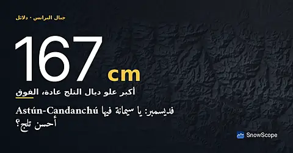
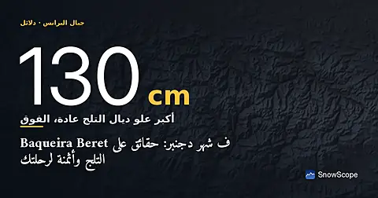
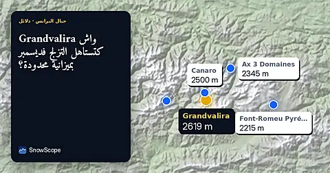
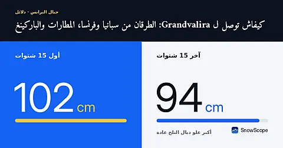
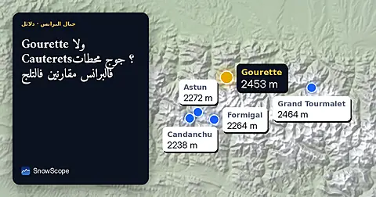
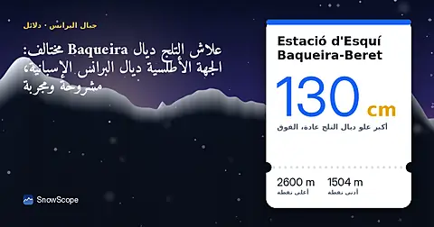
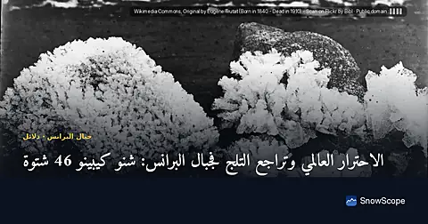
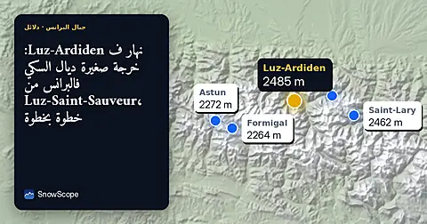

تقارير التلج · جبال البرانس
تقارير يومية ديال التلج للي كيتزلجو: فين كاين التلج، شنو جاي، وفين تمشي تتزلج، من الخريطة ديال التلج ديال SnowScope ومحطات القياس. كل رقم جاي من المعطيات ديال داك النهار.
Snow by country today
The whitest countries today: Andorra (95 %), France (28 %) and Spain (8 %).
Most new snow in the week ahead: France (17 cm), Andorra (13 cm) and Spain (9 cm).
التلج اليوم فالمحطات الكبار
- Gavarnie-Gèdre · 40 سم
- Astun · 39 سم
- Gourette · 36 سم
- Candanchu · 35 سم
- Formigal · 34 سم
- La Pierre Saint-Martin · 33 سم
- Piau-Engaly · 30 سم
- Grand Tourmalet · 27 سم
- Luz-Ardiden · 26 سم
- Peyragudes · 25 سم
- Saint-Lary · 25 سم
- Canaro · 21 سم
- Aramón Cerler · 19 سم
- Boí Taüll · 18 سم
- Les Angles · 18 سم
- Estació d'Esquí Baqueira-Beret · 17 سم
- Ordino-Arcalis · 15 سم
- Pal-Arinsal · 14 سم
- Estació d'esquí de Port-Ainé · 13 سم
- Font-Romeu Pyrénées 2000 · 13 سم
- Ax 3 Domaines · 11 سم
- Estació d'esquí Port del Comte · 10 سم
- GrandValira · 9 سم
- Masella · 7 سم

Boí Taüll كيبدا من 2039 م وكيغلب Baqueira Beret فالتمن ديال البيست، واخا التلج ديال بدايات دجنبر كيطلب شوية ديال الصبر.

Cauterets كتوفر 25 كم ديال البيست بـ 46 EUR، ولكن التاريخ ديال التلج عندنا كيبين بلي أحسن فرصة باش تلقى التلج هي السيمانة اللخرة ديال ديسمبر.

قارن بين Grandvalira والمحطات الصبليونية في دجنبر 2026 من ناحية العلو ديال التلج، العلو ديال ليفات، والأثمنة اللي كتبدا من 49.00 EUR.

إيلا بغيتي سيمانة د التزلج للعائلة فديسمبر فـ Astún-Candanchú بتكلفة ناقصة، وجد راسك لأواخر ديسمبر فين كيكون التلج مزيان فـ 67 % من الشتوات اللي فاتو فالجهة الفوقانية.

كتخطط لرحلة ف دجنبر لـ Baqueira Beret؟ شوف التاريخ ديال التلج عندنا، أثمنة التذاكر اللي كتبدا من 70,00 € لـ 'باس' ديال نهار واحد، وكيفاش كتقارن مع Astún-Candanchú.

Grandvalira غالبا ما كيتم التسويق ليها كوجهة رخيصة للتزلج فديسمبر، ولكن العلو ديال التلج الطبيعي فالباز فالمتوسط غير 9 سم فالشتوات اللي فاتو.


أندورا ماعندهاش مطار كبير: كيفاش توصل ل Grandvalira من Barcelona ولا Toulouse، النفق ديال Envalira، الطريق CG2 والباركينغات.

Gourette و Cauterets جنب لجنب: العلو، التلج العادي فكل شهر، أحسن السيمانات والطريق، من 46 شتوة اللي فاتت.

Baqueira-Beret كاينة ف Val d'Aran، فالجهة الأطلسية ديال البرانس. شنو كيعني هادشي للتلج ديالها، مجرب ب 46 شتوة اللي فاتو مقارنة مع La Molina، وإمتى تمشي.

أيام التلج نقصو ف 120 نقطة اللي درسنا فالبرانس من 1980-81، وكثر تحت 1500 م: السلسلة ديالنا ديال 46 شتوة والبحث العلمي.

كيفاش تدوز نهار مزيان ف Luz-Ardiden، دومين صغير فوق Luz-Saint-Sauveur فالبرانس العليا: الطريق، الجوج جهات، التلج ديال 46 شتوة اللي فاتو، وأشمن سيمانات تختار.